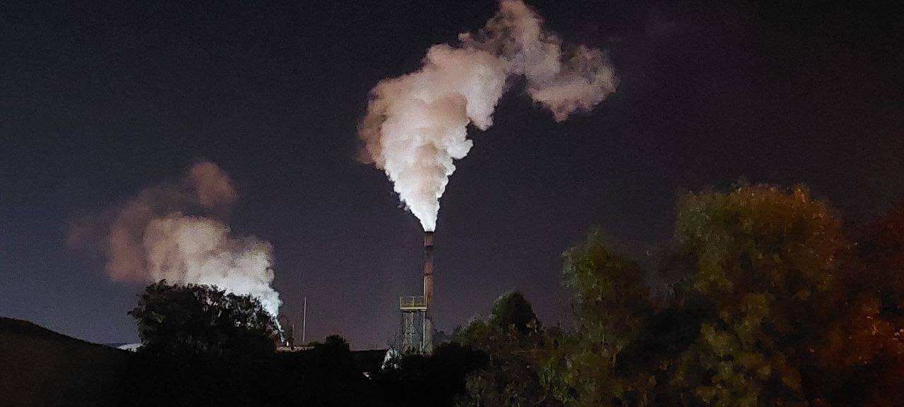
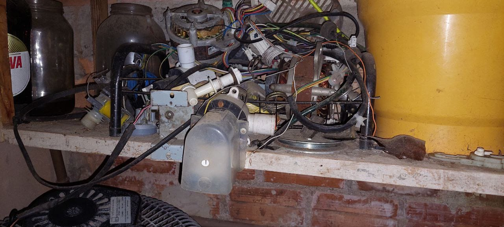

Impactos da tecnologia
As inovações tecnológicas trazem muitos benefícios para nossas vidas, formas mais fáceis de resolver vários problemas, e diversas outras coisas. Porém também traz vários outros problemas, junto deles há os problemas ambientais.
Há muitos outros além dos impactos ambientais, com diversas questões éticas ou outros tipos de problemas com as pessoas, mas vamos representar apenas problemas ambientais.
Uso massivo de energia
O consumo massivo de energia elétrica é muito normal hoje em dia, também pode trazer vários problemas para o ambiente, como por exemplo, o uso massivo dela é uma das maiores fontes para as emissões de gases do efeito estufa,
Ao serem lançadas na atmosfera, geram o aquecimento global.
O consumo dessa energia vem crescendo com o tempo, com isso tem provocado a construção de mais usinas hidrelétricas. Essas usinas não poluem o ar, mas causam grandes impactos ambientais, por conta da quantidade de água utilizada no movimento das turbinas para produção de energia elétrica.
Emissões de carbono.
Pelas inovações da tecnologia, ela vai se tornando mais acessível para todas as pessoas, assim crescendo o uso dessas tecnologias. O uso de muitas dessas tecnologias libera gases do efeito estufa por conta da queima de combustíveis fósseis, como o carvão mineral, gás natural, petróleo, etc.

Foto de João Guilherme Kuspiosz.
Descarte indevido das tecnologias.
O grande crescimento nas quantidades de tecnologias rondando pelo mundo, o descarte delas se tornou um problema, muitas são descartadas de forma errada e com isso muitos problemas são criados.
Com esses descartes feitos de forma errado, traz problemas para a saúde pública devido a metais pesados, gera danos ao meio ambiente por conta de contaminação dos solos, lençóis freáticos, além disso, reduz o tempo de vida dos aterros sanitários.

Foto de João Guilherme Kuspiosz.
Consumismo.
O avanço tecnológico ampliou as possibilidades de consumo. Com esse avanço e disponibilidade da tecnologia a todos, a compra de produtos e serviços se tornou mais fácil por meio de aplicativos ou anúncios que vemos no dia a dia. Assim tornando o consumismo mais frequente e perigoso.
O consumismo nada mais é que o consumo excessivo, ou seja, à compra de produtos ou serviços de modo exagerado.
Conclusão.
A tecnologia traz muitos benefícios ao mundo, com avanços para facilitar funções e tarefas, e em nosso dia a dia também. Porém ao usar de modo exagerado ou errado pode trazer diversos problemas ao meio ambiente, como mostrado acima. Com mudanças de atitudes sobre esses assuntos, o meio ambiente pode ser preservado de maneira mais eficaz.